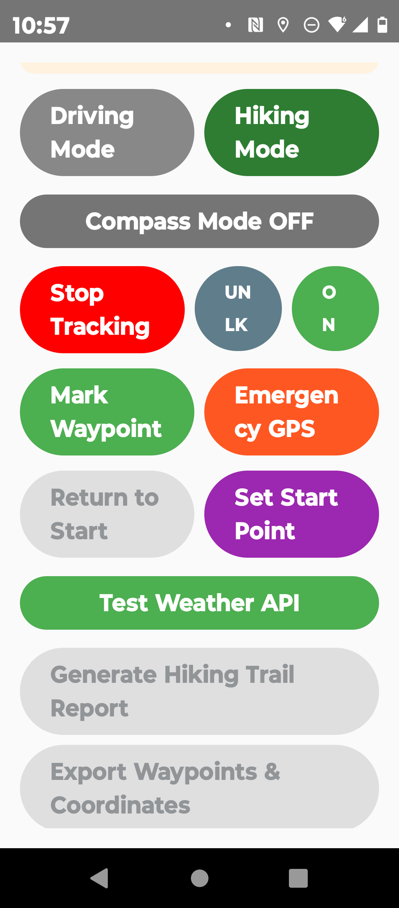

Features of Hiking Mode
?? Compass-Based Navigation
- GPS-free navigation using magnetometer and compass logic
- Return-to-start tracking ensures you can always find your way back
- High-precision trail logging with timestamped records
- Designed for off-grid adventures where GPS signals are unreliable
- Explore confidently — every step documented with forensic clarity
?? Complete Environmental Context
- Real-time weather conditions at time of recording
- Temperature, humidity, wind speed, and visibility data
- Weather-integrated reports for comprehensive documentation
- Essential context for trail safety and analysis